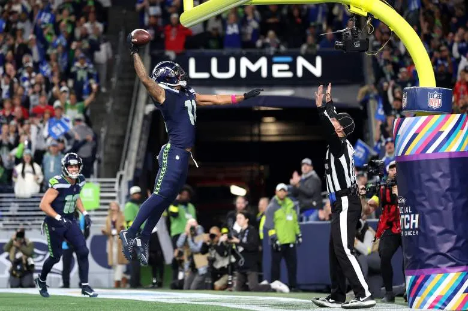

About This Site
This project was built to give Seahawks fans one place to track stats, drafts, and upcoming games.
Built by Josh Gozart for WDD 131, April 2026.


This project was built to give Seahawks fans one place to track stats, drafts, and upcoming games.
Built by Josh Gozart for WDD 131, April 2026.
